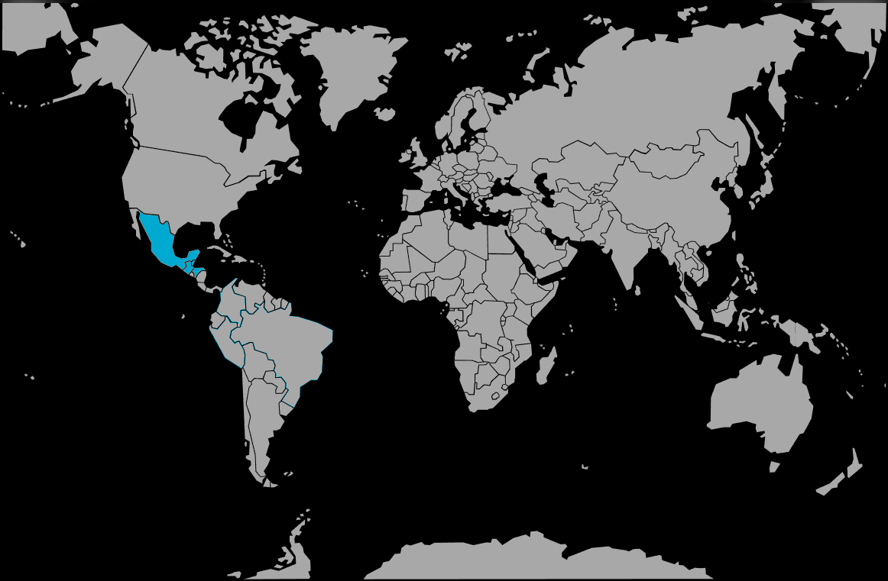

Systématique
- Ordre : Cichliformes
- Famille : Cichlidae
- Sous-famille : Cichlasomatinae
- Genre : Rocio
- Espèce : Rocio octofasciata
Rocio octofasciata est un cichlidé américain de taille moyenne à grande, très coloré et au tempérament marqué.
Les mâles atteignent généralement 20 à 25 cm, les femelles un peu moins, avec une robe parsemée de points irisés bleus et verts sur fond brun à noir.
L’espèce est fortement territoriale, en particulier à l’âge adulte et en période de reproduction, et occupe surtout la zone de fond et mi‑fond.
Elle creuse volontiers et remanie le décor, ce qui impose des aménagements stables et une cohabitation réservée à des poissons de taille et de caractère comparables.
Mode : pondeur sur substrat découvert ; le couple creuse et nettoie une zone plane (pierre, sol dégagé) avant d’y déposer les œufs.
Les parents gardent et défendent œufs et alevins de façon très agressive, rassemblant la progéniture en banc compact et la déplaçant si nécessaire.
Dimorphisme sexuel : mâle plus grand et plus coloré, aux nageoires plus pointues ; femelle plus petite et plus ronde, avec souvent des taches sombres marquées sur les flancs.
Espérance de vie : en moyenne 8 à 10 ans en aquarium, davantage avec un volume adapté et une eau de bonne qualité.
Dans la nature, l’espèce fréquente rivières lentes, marécages, fossés et lagunes peu profondes d’Amérique centrale, aux eaux souvent turbides avec substrat de sable ou de vase et abondance de bois, roches et végétation marginale.
Répartition
Origine naturelle :
- Côte atlantique de l’Amérique centrale, du sud du Mexique au Honduras.
- Rivières lentes, marécages et fossés peu profonds, souvent à végétation marginale abondante.
L’espèce occupe principalement les zones inférieures des cours d’eau, où elle trouve abris et substrats propices pour creuser et se reproduire.
Paramètres de maintenance
Température : 22 à 30 °C, idéalement 24–27 °C.
pH : 7,0 à 8,0.
GH : 9 à 20 °dGH, eau moyenne à dure.
Courant : modéré, avec bonne filtration et renouvellements d’eau réguliers.
Volume conseillé : à partir de 300 L pour un couple, davantage en cohabitation avec d’autres grands cichlidés.
Régime alimentaire
Régime : carnivore opportuniste ; accepte granulés pour cichlidés, proies congelées (moules, crevettes, poissons entiers préparés), vers de terre, etc.
Une alimentation variée mais distribuée avec parcimonie limite les problèmes de surpoids et la pollution organique importante générée par ce type de poisson.